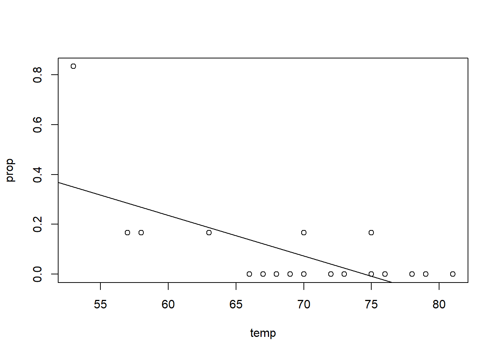
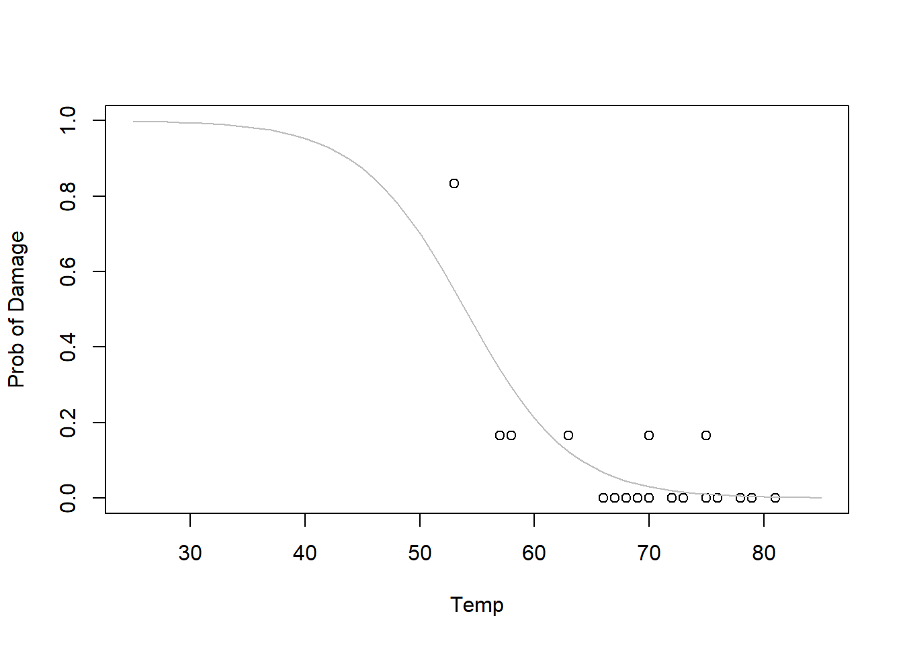
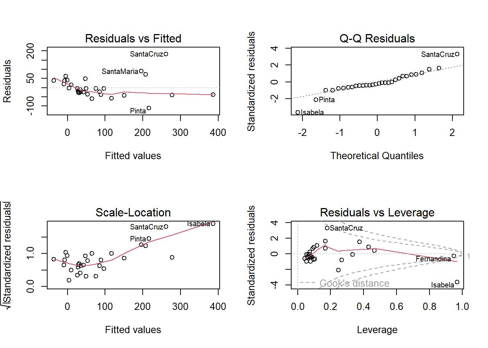
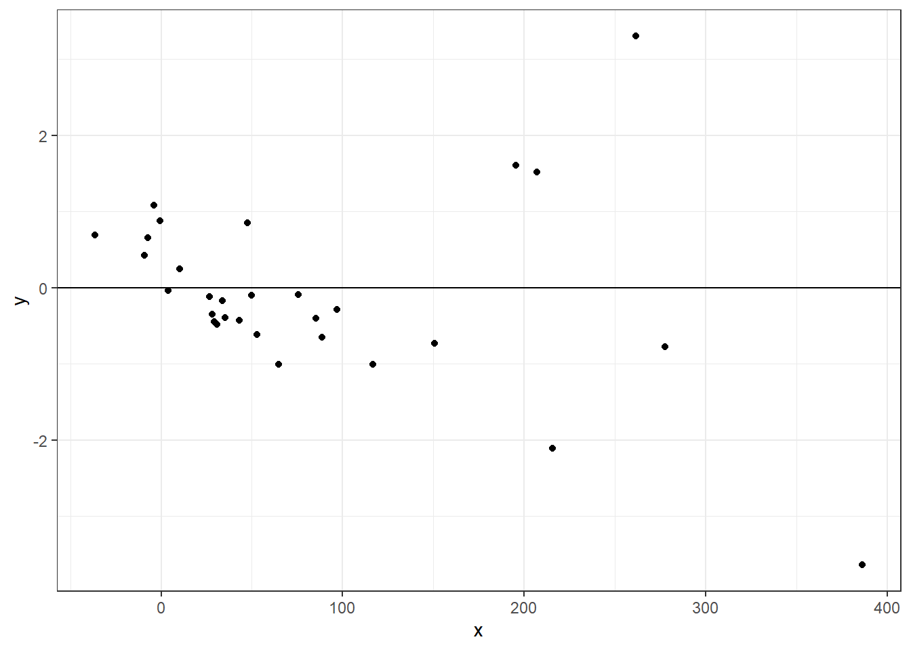
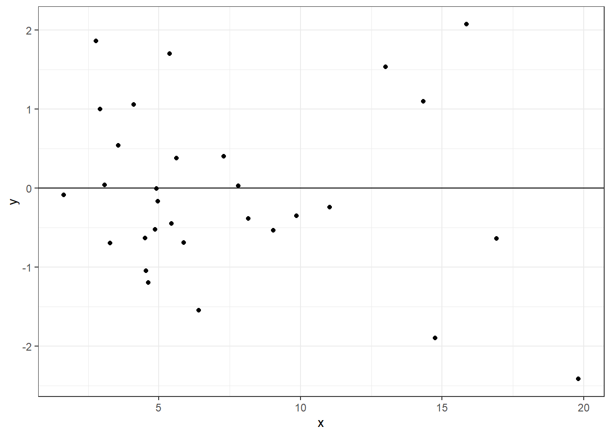
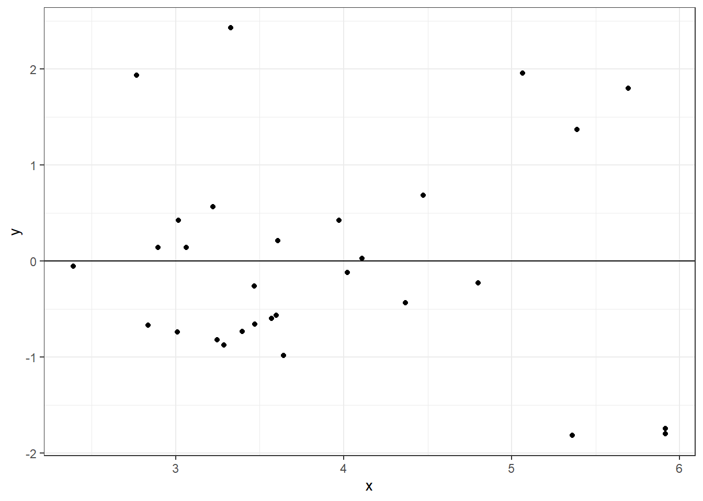
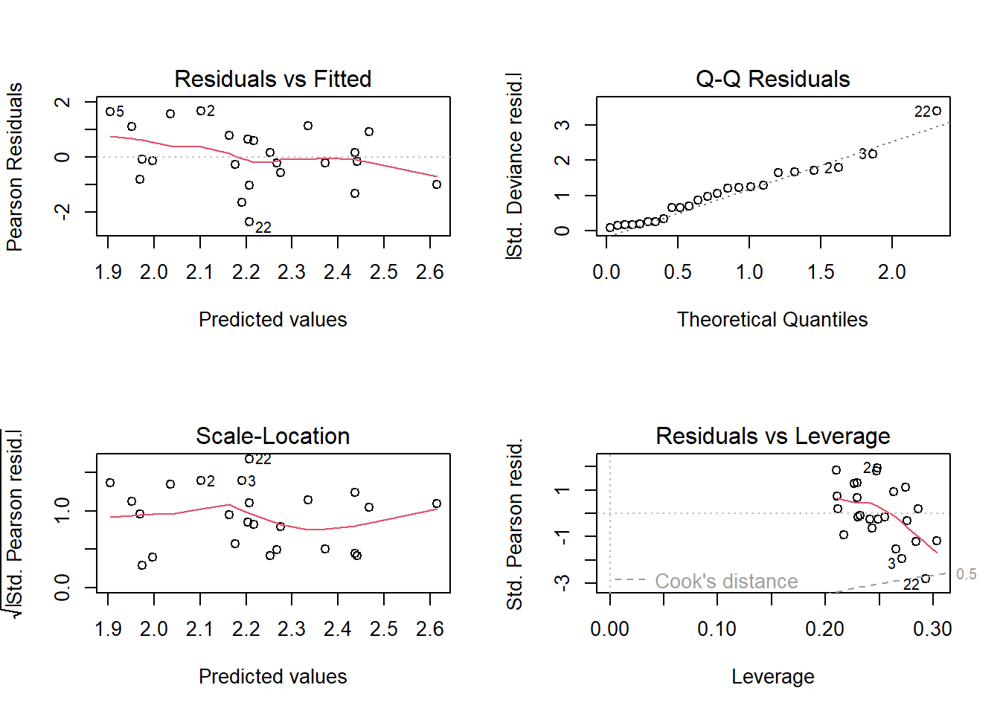

The goal of this assignment is to analyze data using generalized linear models.
Problem #1
In January 1986, the space shuttle Challenger exploded shortly after launch. An investigation was launched into the cause of the crash and attention focused on the rubber O-ring seals in the rocket boosters. At lower temperatures, rubber becomes more brittle and is a less effective sealant. At the time of the launch, the temperature was 31°F. Could the failure of the O-rings have been predicted? In the 23 previous shuttle missions for which data exists, some evidence of damage due to blow by and erosion was recorded on some O-rings. Each shuttle had two boosters, each with three O-rings. For each mission, we know the number of O-rings out of six showing some damage and the launch temperature.
The ‘orings’ is a data frame with 23 observations on the following 2 variables.
temp: Ambient temperature (Fahrenheit) at launch time
damage: Number of damaged ‘O’ rings (out of a total of 6)
(a) Construct a new variable called prop, which is the proportion of damaged ‘O’ rings. Plot prop against temperature. What do you notice about this plot?
library(MASS)#library(aod) #wald.test#library(lmtest) #lrtest (likelihood ratio test--same as anova)orings =read.csv(url(paste0("https://raw.githubusercontent.com/bzaharatos/","-Statistical-Modeling-for-Data-Science-Applications/","master/Generalized%20Linear%20Models%20and%20Nonparametric%20Regression/","Datasets/orings.txt")), sep ="")head(orings)
(b) Use the glm() function for fitting the logit model (logistic regression).
Note: The first argument will be the model: response ~ predictors. For binomial response data, we need two pieces of information about the response values: y and n. Thus for binomial families, the response can be specified as a two-column matrix with the columns giving the numbers of successes and failures. You’ll also need to specify the family argument, and the data argument. Use ?glm to specify these arguments.
First, just note that a standard linear model isn’t a great idea…
#first, just note that a standard linear model isn't a great idea...lmod =lm(prop ~ temp, orings) #Use SLR...with(orings, plot(temp, prop))abline(lmod) #fit...bad idea

summary(lmod)
Call:
lm(formula = prop ~ temp, data = orings)
Residuals:
Min 1Q Median 3Q Max
-0.13786 -0.10345 -0.02369 0.06601 0.48345
Coefficients:
Estimate Std. Error t value Pr(>|t|)
(Intercept) 1.21429 0.29993 4.049 0.000578 ***
temp -0.01631 0.00429 -3.801 0.001043 **
---
Signif. codes: 0 '***' 0.001 '**' 0.01 '*' 0.05 '.' 0.1 ' ' 1
Residual standard error: 0.142 on 21 degrees of freedom
Multiple R-squared: 0.4076, Adjusted R-squared: 0.3794
F-statistic: 14.45 on 1 and 21 DF, p-value: 0.001043
#YOUR CODE HEREglmod =glm(cbind(orings$damage,6-orings$damage) ~ temp, data = orings, family = binomial)summary(glmod)
Call:
glm(formula = cbind(orings$damage, 6 - orings$damage) ~ temp,
family = binomial, data = orings)
Coefficients:
Estimate Std. Error z value Pr(>|z|)
(Intercept) 11.66299 3.29626 3.538 0.000403 ***
temp -0.21623 0.05318 -4.066 4.78e-05 ***
---
Signif. codes: 0 '***' 0.001 '**' 0.01 '*' 0.05 '.' 0.1 ' ' 1
(Dispersion parameter for binomial family taken to be 1)
Null deviance: 38.898 on 22 degrees of freedom
Residual deviance: 16.912 on 21 degrees of freedom
AIC: 33.675
Number of Fisher Scoring iterations: 6
phat =predict(glmod, type ="response"); #phatr =with(orings, (damage/6- phat)/sqrt((phat*(1-phat))/6)) #Pearson Residualssummary(resid(glmod, type ="deviance"))
Min. 1st Qu. Median Mean 3rd Qu. Max.
-0.9529 -0.7345 -0.4393 -0.1661 -0.2079 1.9565
summary(r)
Min. 1st Qu. Median Mean 3rd Qu. Max.
-0.89727 -0.56606 -0.31188 0.07184 -0.14717 3.77106
(c) Plot the data again with the logit model.
You’ll need the inverse of the logit function: \[\text{logit}(\eta) = \frac{e^\eta}{1 + e^\eta}.\]
#YOUR CODE HEREplot(orings$temp,orings$prop, xlim =c(25,85), ylim =c(0,1), xlab ="Temp",ylab ="Prob of Damage")x =seq(25,85,1)eta =11.66299-0.21623*xilogit =exp(eta)/(1+exp(eta))lines(x, ilogit,col ="grey") #ilogit is the inverse logit transform

(d) Now let’s check the interpretation of \(\widehat{\beta}_1\). Create a new temperature value of 45 and 46 degrees. Calculuate the odds of failure at 45 and 46 degrees. What is the ratio of these two odds?
Notice that these intervals are slightly different; they are based on the profile likelihood and do not assume asymptotic normality. They are more accurate for small sample sizes. Profile likelihood confidence intervals don’t assume normality of the estimator and appear to perform better for small samples sizes than Wald CIs (above). They are, nonetheless, still based on an asymptotic approximation – the asymptotic chi-square distribution of the log likelihood ratio test statistic. (for more info: http://www.math.umt.edu/patterson/ProfileLikelihoodCI.pdf)
(g) Predict the probability of faulire at Temp = 45 degrees.
#YOUR CODE HEREpred =predict.glm(glmod, newdata, se = T, type ="response") pred$fit
1
0.8735231
Problem #2
A researcher is interested in how variables, such as gre (Graduate Record Exam scores), gpa (grade point average) and prestige of the undergraduate institution (rank), effect admission into graduate school. The response variable, admit/don’t admit, is a binary variable.
(b) Construct a reduced model without the rank variable. Conduct the likelihood ratio test to decide whether the reduced model is sufficient. You can do this using anova() or lrtest().
#YOUR CODE HEREadmission.red.glm =glm(admit ~ gre + gpa, data = admission, family = binomial)summary(admission.red.glm)
Call:
glm(formula = admit ~ gre + gpa, family = binomial, data = admission)
Coefficients:
Estimate Std. Error z value Pr(>|z|)
(Intercept) -4.949378 1.075093 -4.604 4.15e-06 ***
gre 0.002691 0.001057 2.544 0.0109 *
gpa 0.754687 0.319586 2.361 0.0182 *
---
Signif. codes: 0 '***' 0.001 '**' 0.01 '*' 0.05 '.' 0.1 ' ' 1
(Dispersion parameter for binomial family taken to be 1)
Null deviance: 499.98 on 399 degrees of freedom
Residual deviance: 480.34 on 397 degrees of freedom
AIC: 486.34
Number of Fisher Scoring iterations: 4
anova(admission.red.glm, admission.glm, test ="Chisq") #Likelihood ratio test
Analysis of Deviance Table
Model 1: admit ~ gre + gpa
Model 2: admit ~ gre + gpa + rank
Resid. Df Resid. Dev Df Deviance Pr(>Chi)
1 397 480.34
2 394 458.52 3 21.826 7.088e-05 ***
---
Signif. codes: 0 '***' 0.001 '**' 0.01 '*' 0.05 '.' 0.1 ' ' 1
YOUR ANSWER HERE
Problem #3
For each 30 Galapagos islands, we have a count of the number of plant species found on each island and the number that are endemic to that island. We also have five geographic variables for each island.
Species: the number of plant species found on the island
Endemics: the number of endemic species
Area: the area of the island (km\(^2\))
Elevation: the highest elevation of the island (m)
Nearest: the distance from the nearest island (km)
Scruz: the distance from Santa Cruz island (km)
Adjacent: the area of the adjacent island (square km)
(a) Remove the Endemics variable from the dataframe, and fit a linear model with Species as the response and all other variables as predictors. Run some diagnostics and explain why this model is not the best fit.
#YOUR CODE HERElmod =lm(Species ~ ., data = gala)summary(lmod)
Call:
lm(formula = Species ~ ., data = gala)
Residuals:
Min 1Q Median 3Q Max
-111.679 -34.898 -7.862 33.460 182.584
Coefficients:
Estimate Std. Error t value Pr(>|t|)
(Intercept) 7.068221 19.154198 0.369 0.715351
Area -0.023938 0.022422 -1.068 0.296318
Elevation 0.319465 0.053663 5.953 3.82e-06 ***
Nearest 0.009144 1.054136 0.009 0.993151
Scruz -0.240524 0.215402 -1.117 0.275208
Adjacent -0.074805 0.017700 -4.226 0.000297 ***
---
Signif. codes: 0 '***' 0.001 '**' 0.01 '*' 0.05 '.' 0.1 ' ' 1
Residual standard error: 60.98 on 24 degrees of freedom
Multiple R-squared: 0.7658, Adjusted R-squared: 0.7171
F-statistic: 15.7 on 5 and 24 DF, p-value: 6.838e-07
par(mfrow =c(2,2))plot(lmod)

df =data.frame(x =fitted(lmod), y =stdres(lmod))ggplot(df, aes(x = x, y = y)) +geom_point() +theme_bw() +geom_hline(yintercept =0)

(b) Recall that a square root transformation of the response might be helpful when the nonconstant variance assumption is violated. Try this transformation.
#YOUR CODE HERElmod2 =lm(sqrt(Species) ~ ., data = gala)summary(lmod2)
Call:
lm(formula = sqrt(Species) ~ ., data = gala)
Residuals:
Min 1Q Median 3Q Max
-4.5572 -1.4969 -0.3031 1.3527 5.2110
Coefficients:
Estimate Std. Error t value Pr(>|t|)
(Intercept) 3.3919243 0.8712678 3.893 0.000690 ***
Area -0.0019718 0.0010199 -1.933 0.065080 .
Elevation 0.0164784 0.0024410 6.751 5.55e-07 ***
Nearest 0.0249326 0.0479495 0.520 0.607844
Scruz -0.0134826 0.0097980 -1.376 0.181509
Adjacent -0.0033669 0.0008051 -4.182 0.000333 ***
---
Signif. codes: 0 '***' 0.001 '**' 0.01 '*' 0.05 '.' 0.1 ' ' 1
Residual standard error: 2.774 on 24 degrees of freedom
Multiple R-squared: 0.7827, Adjusted R-squared: 0.7374
F-statistic: 17.29 on 5 and 24 DF, p-value: 2.874e-07
#par(mfrow = c(2,2)); plot(lmod2)df =data.frame(x =fitted(lmod2), y =stdres(lmod2))ggplot(df, aes(x = x, y = y)) +geom_point() +theme_bw() +geom_hline(yintercept =0)

(c) One issue with a transformation is that it makes interpretation less natural. Let’s try a Poisson regression (with no transformation on the repsonse).
#YOUR CODE HEREglmod =glm(Species ~ ., data = gala, family = poisson)summary(glmod)
Call:
glm(formula = Species ~ ., family = poisson, data = gala)
Coefficients:
Estimate Std. Error z value Pr(>|z|)
(Intercept) 3.155e+00 5.175e-02 60.963 < 2e-16 ***
Area -5.799e-04 2.627e-05 -22.074 < 2e-16 ***
Elevation 3.541e-03 8.741e-05 40.507 < 2e-16 ***
Nearest 8.826e-03 1.821e-03 4.846 1.26e-06 ***
Scruz -5.709e-03 6.256e-04 -9.126 < 2e-16 ***
Adjacent -6.630e-04 2.933e-05 -22.608 < 2e-16 ***
---
Signif. codes: 0 '***' 0.001 '**' 0.01 '*' 0.05 '.' 0.1 ' ' 1
(Dispersion parameter for poisson family taken to be 1)
Null deviance: 3510.73 on 29 degrees of freedom
Residual deviance: 716.85 on 24 degrees of freedom
AIC: 889.68
Number of Fisher Scoring iterations: 5
#par(mfrow = c(2,2)); plot(glmod)df =data.frame(x =predict(glmod, type ="link"), y =stdres(glmod))ggplot(df, aes(x = x, y = y)) +geom_point() +theme_bw() +geom_hline(yintercept =0)

(d) Interpret the parameter associated with Nearest.
#YOUR CODE HEREexp(8.826e-03)
[1] 1.008865
YOUR ANSWER HERE
(e) Calculate the deviance for Poisson regression. Does this value show up in the summary? Also, check the goodness of fit of this model using Pearson’s \(\chi^2\) statistic. What do you conclude about the fit?
#YOUR CODE HERE#checking whether dropping nearest is reasonable...glmodred =glm(Species ~ .-Nearest, data = gala, family = poisson)anova(glmodred, glmod, test ="Chisq")
Analysis of Deviance Table
Model 1: Species ~ (Area + Elevation + Nearest + Scruz + Adjacent) - Nearest
Model 2: Species ~ Area + Elevation + Nearest + Scruz + Adjacent
Resid. Df Resid. Dev Df Deviance Pr(>Chi)
1 25 739.41
2 24 716.85 1 22.565 2.031e-06 ***
---
Signif. codes: 0 '***' 0.001 '**' 0.01 '*' 0.05 '.' 0.1 ' ' 1
Problem #4 (Optional)
Research another type of GLM (beyond binomial and Poisson), find a dataset that is reasonably modeled by that GLM, and model it. Does the model fit well?
#YOUR CODE HERE
Problem #5
The following data is on lung cancer incidence in four Danish cities 1968-1971. This data set contains counts of incident lung cancer cases and population size in four neighbouring Danish cities by age group.
Because we have an exposure (population), we should include an offset term.
(a) Fit a Poisson model, with an offset for population, and then estiamte the dispersion parameter.
glmodrate =glm(cases ~ age + city +offset(log(pop)), data = cancer, family =poisson(link ="log"))summary(glmodrate)
Call:
glm(formula = cases ~ age + city + offset(log(pop)), family = poisson(link = "log"),
data = cancer)
Coefficients:
Estimate Std. Error z value Pr(>|z|)
(Intercept) -5.6321 0.2003 -28.125 < 2e-16 ***
age55-59 1.1010 0.2483 4.434 9.23e-06 ***
age60-64 1.5186 0.2316 6.556 5.53e-11 ***
age65-69 1.7677 0.2294 7.704 1.31e-14 ***
age70-74 1.8569 0.2353 7.891 3.00e-15 ***
age75+ 1.4197 0.2503 5.672 1.41e-08 ***
cityHorsens -0.3301 0.1815 -1.818 0.0690 .
cityKolding -0.3715 0.1878 -1.978 0.0479 *
cityVejle -0.2723 0.1879 -1.450 0.1472
---
Signif. codes: 0 '***' 0.001 '**' 0.01 '*' 0.05 '.' 0.1 ' ' 1
(Dispersion parameter for poisson family taken to be 1)
Null deviance: 129.908 on 23 degrees of freedom
Residual deviance: 23.447 on 15 degrees of freedom
AIC: 137.84
Number of Fisher Scoring iterations: 5
dp =sum(resid(glmodrate, type ="pearson")^2)/glmodrate$df.res; dp
[1] 1.504109
summary(glmodrate, dispersion = dp)
Call:
glm(formula = cases ~ age + city + offset(log(pop)), family = poisson(link = "log"),
data = cancer)
Coefficients:
Estimate Std. Error z value Pr(>|z|)
(Intercept) -5.6321 0.2456 -22.932 < 2e-16 ***
age55-59 1.1010 0.3045 3.616 0.000299 ***
age60-64 1.5186 0.2841 5.346 9.01e-08 ***
age65-69 1.7677 0.2814 6.282 3.34e-10 ***
age70-74 1.8569 0.2886 6.434 1.24e-10 ***
age75+ 1.4197 0.3069 4.625 3.74e-06 ***
cityHorsens -0.3301 0.2226 -1.483 0.138140
cityKolding -0.3715 0.2303 -1.613 0.106721
cityVejle -0.2723 0.2304 -1.182 0.237206
---
Signif. codes: 0 '***' 0.001 '**' 0.01 '*' 0.05 '.' 0.1 ' ' 1
(Dispersion parameter for poisson family taken to be 1.504109)
Null deviance: 129.908 on 23 degrees of freedom
Residual deviance: 23.447 on 15 degrees of freedom
AIC: 137.84
Number of Fisher Scoring iterations: 5
(b) Fit a reduced model without the city variable. Test to see if city is needed.
glmodratered =glm(cases ~ age +offset(log(pop)), data = cancer, family =poisson(link ="log"))
anova(glmodratered, glmodrate, test ="Chisq") #city not necessary
Analysis of Deviance Table
Model 1: cases ~ age + offset(log(pop))
Model 2: cases ~ age + city + offset(log(pop))
Resid. Df Resid. Dev Df Deviance Pr(>Chi)
1 18 28.306
2 15 23.448 3 4.859 0.1824
(c) Look at some plots to diagnose problems with the model.
par(mfrow =c(2,2)); plot(glmodratered)

(d) Use the reduced model to predict the rate of cancer at age = “40-54” and pop = 1000 (i.e., cancer per 1000 people). Then, use the full model to predict the rate of cancer at at age = “40-54” and pop = 1000 in the city of Kolding. Do the predictions differ very much?
newdataRed =data.frame(age ="40-54", pop =1000)predRed =predict(glmodratered, newdataRed, type ="response")predRed
1
2.844828
newdataFull =data.frame(city ="Kolding", age ="40-54", pop =1000)predFull =predict(glmodrate, newdataFull, type ="link")exp(predFull)